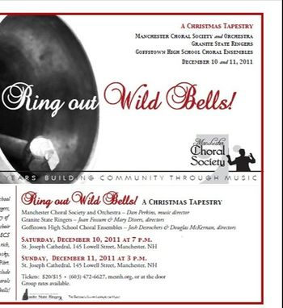
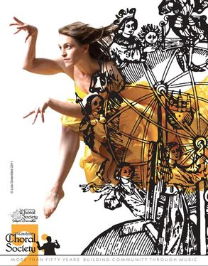

December 2011: A Christmas Tapestry — Ring Out Wild Bells!
Dan Perkins, music director
In collaboration with Granite State Ringers and Goffstown High School Choral Ensembles
Veni, veni Emmanuel (Processional) — Robert Young
Voices in the Mist — Stephen Chatman
Bogoróditse Djévo — Sergei Rachmaninov
Bogoróditse Djévo — Arvo Pärt
The Cherubic Hymn, No. 6, Op. 41 — Pyotr Ilyich Tchaikovsky
Little Drummer Boy — Katherine Davis, Henry Onorati & Harry Simeone, arr. Tammy Waldrop
Pat-A-Pan — Burgundian Carol, arr. Fred Gramann
Welsh Carol — Traditional, arr. Patricia Sanders Cota
Carol of the Bells — Traditional Ukrainian Carol
I Heard the Bells on Christmas Day — J. David Moore
Hodie Christus natus est — Healey Willan
Good King Kong Looked Out — P.D.Q. Bach / Peter Schickele
(from A Consort of Choral Christmas Carols)
Sing We Now of Christmas — Kevin McChesney
Come Join Their Song — Mark Shepperd
Glory, Glory, Glory to the Newborn King — arr. Moses Hogan
Johanna Publow, soprano
Michael Finney, baritone
Derrick Landano, tenor
Great Day — arr. Carol Barnett
Away in a Manger — William J. Kirkpatrick, arr. Howard Helvey
Molly Goldstein, cello
O Come, All Ye Faithful — John Reading
Joy to the World — G.F. Handel, arr. Cathy Moklebust
May 2012
In collaboration with Second Generation Manchester Choral Society (2GMCS), Tributary Dance, and Plymouth State University Percussion Ensemble
Carmina Burana — Carl Orff
Janet Poisson, soprano
Rory Diamond, baritone
Charles Lindsey, tenor